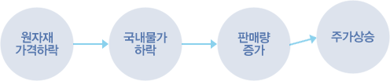

주식교실 ㅣ 기본적분석
통화량의 변동은 국가나 기업이나 주식시장에서도 결정적인 영향을 미치는 요소 중의 하나이다.
그러나, 통화량이 너무 많아지면 화폐가치가 떨어지게 되고 인플레이션 및 이자율이 상승할 수 있게 되므로 오히려 주가가 하락할 수도 있다. 그러므로 상황에 따라 주식시장에 어떠한 영향을 미칠지를 고려해야 한다. 우리나라의 통화공급수준은 정부의 정책에 많은 변수를 두는데 매년 적정공급 수준을 결정하여 통화를 관리 조절하며 우리나라 통화의 동향을 파악하려면 매월 초순 한국은행에서 발표하는 월간통화 동향이나 금융기관의 매월 경제동향 분석서에서 일반인들도 쉽게 접할 수 있다.
물가는 기업이나 개인에게 물질적, 심리적인 영향을 상당하게 주므로 그 연쇄효과로 주식시장도 영향을 다분히 받는 편이다. 물가는 크게 인플레이션(물가상승)과 디플레이션(물가하락)으로 나누어 구분합니다.
-
완만한 인플레이션(inflation)
수요가 상승하여 발생하는 완만하고 지속적 물가상승은 실물경기의 상승을 수반하며 기업수지의 개선과 기업 자산가치를 증대시킴으로써 전반적 으로 주가의 상승을 가져옴
-
급격한 인플레이션
수금융저축을 위축시키고 투자자로 하여금 부동산 등의 실물자산을 선호케 하여 주가를 하락시키는 요인으로 작용함
-
스태그플레이션(stagflation)
공급이 위축되어 물가가 상승하는 경우에는 기업수지에 악영향을 주어 주가의 하락을 초래함. 그리고 또한 물가 상승으로 인하여 소비자의 실질 소득수준이 감소하여 구매력이 위축됨으로써 주가 하락을 초래함
-
디플레이션(deflation)
물가가 하락하거나 물가상승률이 둔화되는 시기에는 저물가와 저금리현상이 동반되기 때문에 민간은 실물자산보다는 예금과 주식 등의 금융자산을 선 호하게 되어 주가의 폭등을 초래하는 경우가 대부분임
금리는 기본적으로 자금의 수요와 공급에 의해서 결정되는데 통화량과도 밀접한 관계를 가지고 있다. 또한 금리는 경제 전반에 걸쳐 그 영향이 크므로 정책적인 요인이 다분히 내재되는데, 즉 경기가 침체될 때는 금리수준을 낮추어 기업의 금융부담을 줄여 줌으로써 경기를 부양시키는 효과가 있고, 반대로 경기가 과열될 때는 금리수준을 높여 경기를 진정시키기도 한다.

환율이란 국가간 돈의 교환비율로 원래는 외환시장의 수급원리에 의해 결정되지만 요즘은 국제수지나 금리, 물가, 정책 등 다방면의 요소가 복합적으로 작용한다. 환율이 인상됐다라는 것은 원화의 가치가 평가절하된 것을 말하며 국제수지가 악화되거나 물가, 금리 등 모든 조건이 취약할 때 나타난다. 환율이 인하됐다라는 것은 원화의 가치가 평가 절상된 것을 말하는데 수출이 수입보다 많아지는 등 국제수지가 적자에서 흑자로 전환되면서 흑자 폭이 점차 확대 될 때라든지 물가, 금리가 안정된 상태에서 많이 나타난다.
-
외국인 투자자와 국내 투자자의 투자관점의 차이
국내투자자는 단순히 주가의 등락에 만 관심을 가지지만, 외국인 투자자는 환율을 고려하여 자국화폐로 환산한 주가에 관심을 둔다.
-
외국인 투자자와 주가의 관계
외국인 투자자금이 국내로 유입되면 주가는 상승하고, 유출되면 주가는 하락한다.
-
세계 증시의 동조화(synchronizing) 현상
각국의 자본자유화 확대로 국제적으로 자본 의 이동이 용이하게 됨에 따라 각국의 주가가 동일한 방향으로 변동하는 현상이 심화되고 있음
부존자원이 풍부한 나라는 장기적으로 원자재 가격과 주가가 같은 방향으로 변동하는 경향이 있으나 우리나라와 같이 원자재가 부족한 나라의 경우에 원자재 가격과 주가는 역의 관계가 있다. 국제 원자재 가격이 상승하면 기업 수지에 부담이 되기 때문에 주가는 하락하게 된다.
